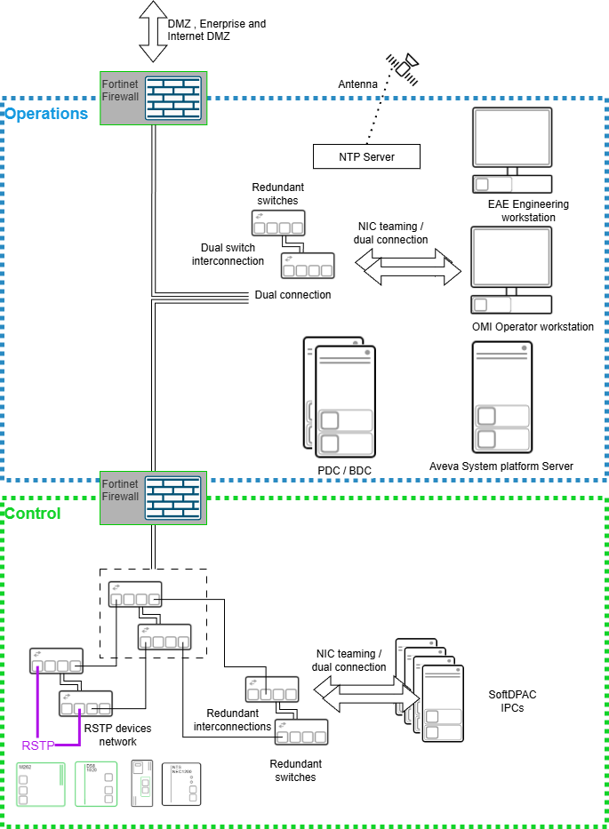
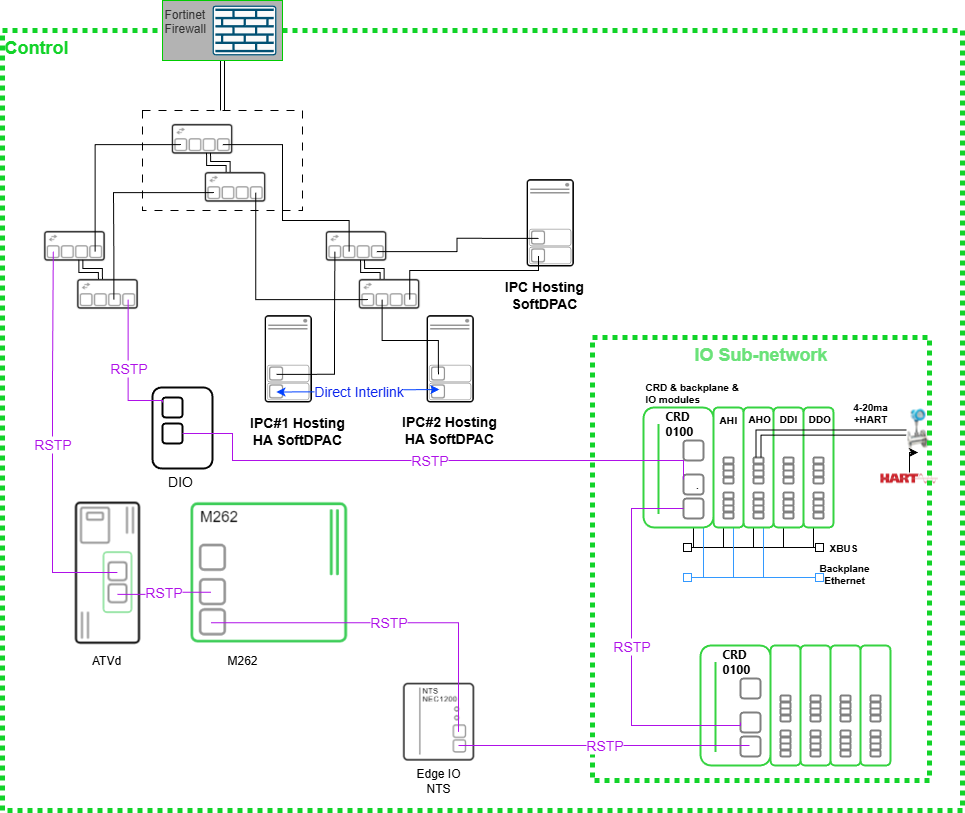
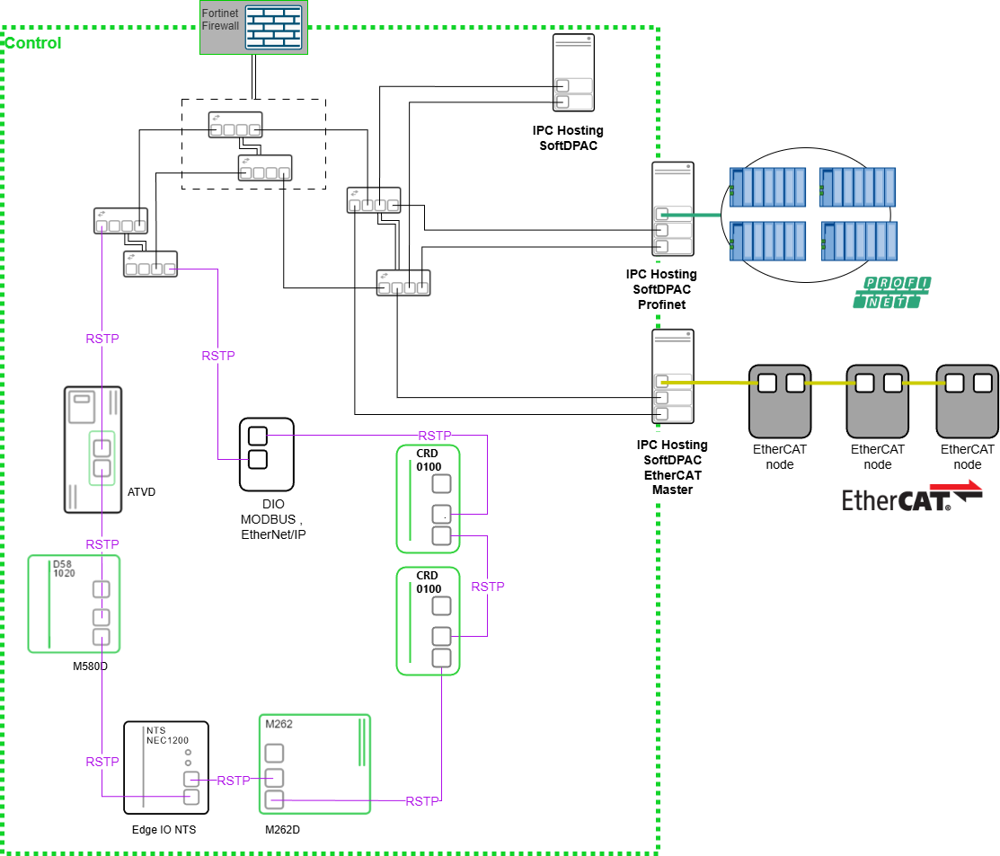

All networks installed in an industrial setting, where network performance is critical to plant operation, must be protected from cyber attacks.
The cybersecurity requirements must be determined before the tendering phase, and those requirements evaluated and passed on to:
Project personnel
Design activities
Equipment selection
Project deliverable lists
The project must accommodate all cybersecurity requirements and facilitate their fulfillment throughout the installed life of the system to be delivered. To accomplish this, the Delivery project might have tasks and deliverables that support the future but do not directly contribute to completing a successful Factory Acceptance Test.
Switch hardening and redundancy, refer to the Switch Security Considerations topic.
Firewall hardening rules, refer to Firewall Security Considerations topic.
Find below an overview of the detailed EcoStruxure Automation Expert Network Architecture mentioned as Level 2 & 3 in the topic Control System Architecture.
The operations network hosts:
The EcoStruxure Automation Expert engineering workstation.
The AVEVA OMI operation workstations.
Any supporting AVEVA System Platform servers required for hosting the Galaxy database.
For more information about how to securely configure the Galaxy database, refer directly to AVEVA System Platform documentation.
The appendix topic Additional Documentation provides a link to the website for the AVEVA System Platform Application Server.
Active directory Domain Servers and Network Attached Storage.
Each of the AVEVA OMI operator workstations and AVEVA System Platform servers are recommended to be dual connected, the network switches should be redundant to help protect against any single network component failure, and the operations network needs to be separated from other networks by firewalls.

The control network of Soft dPAC, CRD, ATVd, M580d and M262d can be networked in an RSTP ring to provide network redundancy that is tolerant to any single network component failure and tolerant the failure of any individual device that acts as a network hop.
The IPCs themselves cannot act as a network hop, but can be dual connected to redundant network switches that are connected together using RSTP.
IPCs hosting High Availability Soft dPAC must be connected via a dedicated direct Ethernet connection and must not be connected via a network switch or switched Ethernet network. The data carried over this network carries control input and output data (refer to the Assets topic). The control network must be physically separate from other networks and separated from the Operations network via the firewall to protect the integrity of this asset.
| CAUTION | |
|---|---|

Modbus, EtherNet/IP, Profinet and EtherCAT do not provide cryptographic protection of integrity or confidentiality. The Control network must therefore be physically separate from the other networks in the system and separated from the operations network by a firewall.
| CAUTION | |
|---|---|

The EtherCAT and Profinet networks must be physically separate from the control network and located within the plant perimeter.
To help protect the essential function of the system, DIO (Distributed IO connected via Modbus or EtherNet/IP), Profinet devices, or EtherCAT nodes should be configured with a deterministic behavior that will be enacted in case of communications interruption. The deterministic behavior is typically one of the following settings:
Hold Last Value (HLV)
High
Low
Ramp to Stop
Coast to Stop
Set to Preset Speed
Brake to Stop
Trigger Fault / Alarm
Switch to Local Control
Edge I/O provides distributed I/O (DIO) in the L1 network with the ability to secure the integrity of its configuration settings. Cybersecurity configuration can be applied to Edge I/O either via the device configuration web page interface or using the using Cybersecurity Admin Expert. User accounts, enabled services, logon banner and fallback settings should be applied. For information about:
Configuring user accounts with minimum required privileges, refer to the Modicon Edge I/O Configurator and Web Interface - User Guide help for the User Management Subpage.
Configuring session settings, refer to the Modicon Edge I/O Configurator and Web Interface - User Guide help for the Session Management Subpage.
Enabling only the required services, refer to the Modicon Edge I/O Configurator and Web Interface - User Guide help for the Network Interface Subpage.
Creating a logon banner, refer to the Modicon Edge I/O Configurator and Web Interface - User Guide help for the Security Banner Subpage.
Configure required fallback configuration
To help protect the essential function of the system, IO modules should be configured with a deterministic behavior that will be enacted in case of communications interruption. The deterministic behavior is typically one of the following settings:
Hold Last Value (HLV)
High
Low
These can be configured via the I/O channel parameters. For information about a typical I/O module, you can refer to the Modicon Edge I/O NTS Discrete Modules - User Guide help for the module NTSDRA0615 Parameters. This document also provides information for other I/O modules with similar fallback settings.